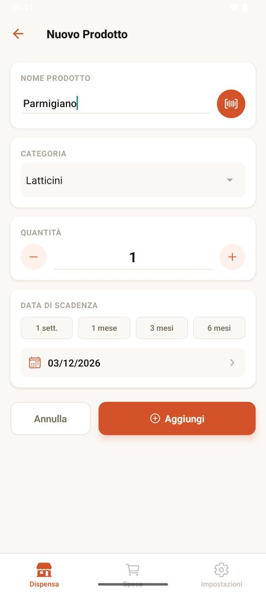
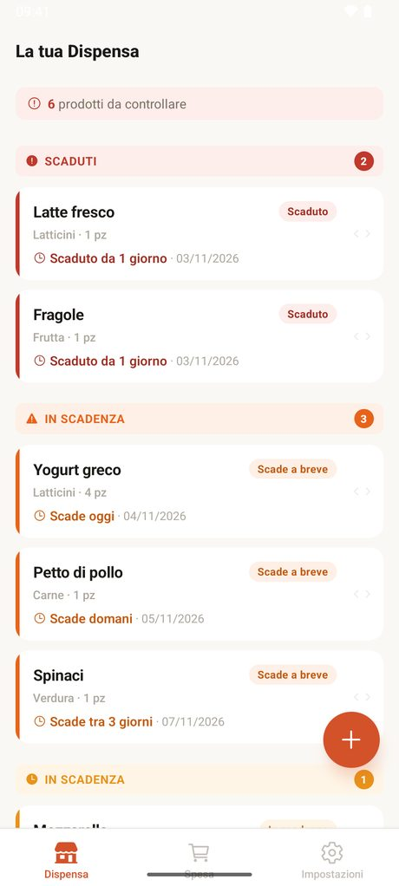
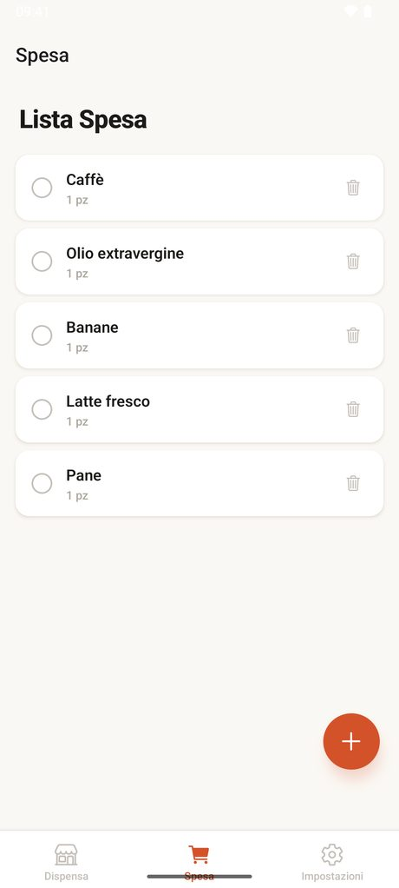

Il semaforo della dispensa
Ogni prodotto ha un colore: capisci in un colpo d'occhio cosa mangiare per primo.
Lo vedi in cima, in rosso: da controllare subito.
rossoScade oggi o a breve: è il prossimo da mangiare.
arancioneHa ancora qualche giorno, ma è sulla lista.
gialloNessun pensiero per ora.
verdeAggiungi in pochi tocchi
Nome, categoria, quantità e scadenza, con scorciatoie da 1 settimana a 6 mesi. Oppure scansiona il codice a barre: dalla seconda volta Scadì riconosce il prodotto da solo.
Lo scanner non chiede il permesso della fotocamera.


Vedi cosa mangiare per primo
La dispensa è ordinata per urgenza e colorata a semaforo. Quando lo consumi lo segni, e Scadì ti avvisa con una notifica prima che qualcosa scada.
Fai la spesa con la lista
Segna cosa manca e spunta gli articoli mentre li metti nel carrello. La lista è nella stessa app, senza altro da installare.
